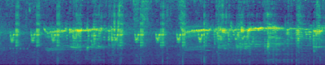
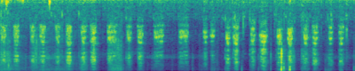

Large-scale multimodal generative modeling has created milestones in text-to-image and text-to-video generation. Its application to audio still lags behind due to two main reasons: the lack of large-scale datasets with high-quality text-audio pairs, and the complexity of modeling long continuous audio data. In this work, we propose Make-An-Audio with a prompt-enhanced diffusion model that addresses these gaps by 1) introducing pseudo prompt enhancement with a distill-then-reprogram approach which alleviates the data scarcity by using weekly-supervised data with language-free audios; 2) leveraging spectrogram autoencoder to predict the self-supervised audio representation instead of waveforms. Together with robust contrastive language-audio pretraining (CLAP) representations, Make-An-Audio achieves state-of-the-art results in both objective and subjective evaluation. Moreover, we present its controllability with classifier-free guidance and generalization for X-to-Audio with "No Modality Left Behind", for the first time unlocking the ability to generate high-definition, high-fidelity audios given a user-defined modality input.
Samples
Architecture
Text-to-Audio Generation: Comparison to prior work
desc
Make-An-Audio
DiffSound
Ground Truth
a cat meowing and young female speaking
a group of sheep are baaing
a horse galloping
Engine noise with other engines passing by
a chainsaw cutting as wood cracks and creaks
drums and music playing with a man speaking
piano and violin plays
fireworks pop and explode
a speedboat running as wind blows into a microphone
thunder as rain falling down
Train passing followed by short honk
Water flowing down a river
Personalized Text-to-Audio Generation
It allows to inject unique objects into new scenes, transform them across different styles. For instance, when asked to generate ``baby crying'' given the initial sound of ``thunder'', our model produces realistic and faithful audio describing ``a baby cries in the thunder day".
prompt
origin audio
personalized audio
a baby crying
vehicle running and horn ringing
a man whistling
dog barks
Audio Inpainting
Inpainted Audio
Corrupted Audio
Ground Truth Audio


Image-to-Audio Generation
Video-to-Audio Generation
Ablation: Pseudo Prompt Enhancement (PPE)
prompt
w/o PPE
Make-An-Audio
a cat meowing and young female speaking
a chainsaw cutting as wood cracks and creaks
a group of sheep are baaing
a horse galloping
a speedboat running as wind blows into a microphone
drums and music playing with a man speaking
Engine noise with other engines passing by
fireworks pop and explode
piano and violin plays
thunder as rain falling down
Train passing followed by short honk
Ablation: Video-Audio Temporal Alignment
Row2: Baseline trained with visual data, Row3: Make-An-Audio trained without visual data
Ablation: Image-to-Audio
Row2: Baseline trained with visual data, Row3: Make-An-Audio trained without visual data